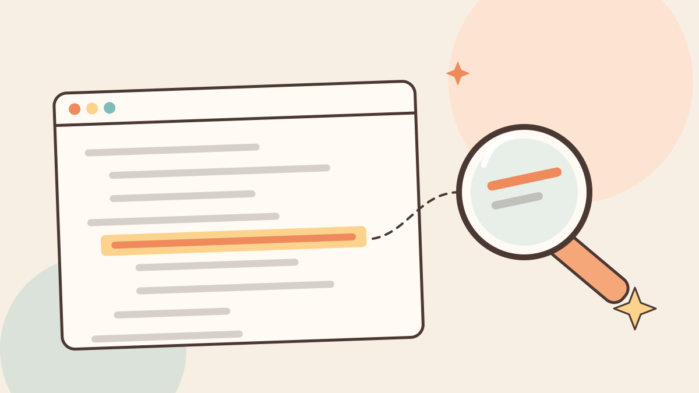

How to Read Code You Didn't Write

The first time I opened a real open source project, I scrolled through it for ten minutes, understood almost nothing, and closed the tab. If that has happened to you, here's the good news: nobody reads a codebase the way you were trying to.
Nobody reads it from the top
Tutorials show you code in order. One file, top to bottom, every line explained. Real projects don't work like that.
Even this website is bigger than it looks. It has about 750 lines of JavaScript, 1,800 lines of CSS and 900 lines of HTML. People who have worked on a project for years don't carry all of it in their heads either. They carry a rough map, and they look up the rest when they need it.
So stop trying to understand everything. Pick one thing and follow it.
Start from something you can see
Choose something you can actually see on the screen. We'll use the copy buttons in the Git, Decoded cheat sheet on our homepage. You click "copy", it says "copied ✓" for a second, and the command is on your clipboard.
Somewhere in this project there are a few lines that make that happen. Let's find them.
Step 1: Inspect it
Right-click a copy button and choose Inspect. Your browser opens the HTML for that exact element:
<button class="copy" type="button">copy</button>That class name, copy, is your first clue. CSS and JavaScript find elements on the page through class names and ids, so they're usually the thread worth pulling.
Step 2: Search the whole project
Open the project in VS Code and press Ctrl+Shift+F (Cmd+Shift+F on a Mac) to search every file at once. Search for .copy.
You'll get a handful of results. The ones in css/style.css decide how the button looks. The one in js/main.js decides what it does. That's the one we want.
Step 3: Read only that part
Here it is:
// Copy buttons on every code block.
document.addEventListener("click", async (e) => {
const btn = e.target.closest(".copy");
if (!btn) return;
try {
await navigator.clipboard.writeText(btn.parentElement.querySelector("code").innerText.trim());
btn.textContent = "copied ✓";
} catch {
btn.textContent = "select + ctrl+c";
}
setTimeout(() => (btn.textContent = "copy"), 1600);
});You don't need to know every word to get the idea. Read it like a sentence: whenever something on the page is clicked, check whether it was a copy button. If it was, copy the text from the code block next to it and change the label to "copied ✓". If copying fails, ask the person to copy it by hand. After 1.6 seconds, put the label back.
If a word is new to you, like closest, look up only that word. MDN is the best place for anything that runs in a browser. You learn a language one lookup at a time, and that's completely fine.
Step 4: Change it and watch
Now break it on purpose. Run the site on your laptop (CONTRIBUTING.md shows how), change "copied ✓" to "got it!", save, and click a copy button.
If your new text shows up, you've proven you found the right code. Nothing checks a guess faster. Change it back when you're done.
Read the boring files first
Before you go hunting, spend five minutes on the files nobody finds exciting. The README tells you what the project is and how to run it. CONTRIBUTING tells you the rules, and in a good project it also tells you where things live.
Ours has a table that says js/main.js is "everything interactive, in commented blocks". That one line already tells you where to look for any button, animation or form on the site.
Then look at the folder names. They're small hints. A folder called tests is not where the button lives.
Let Git answer your questions
The code tells you what it does. Git can often tell you why.
git log --oneline -- js/main.jsThis lists every commit that touched that file, newest first.
git blame js/main.jsThis shows, for every single line, the last commit that changed it and who made it. Find a line that confuses you, copy its commit id, and run git show <id> to read the message and the whole change around it.
git log -S "copied ✓" --onelineThis finds the commits where that exact text was added or removed. It's handy when you want to know when something appeared and what came with it.
A good commit message is someone explaining their thinking to a stranger from the future. That stranger is you right now. It's also a good reason to write proper ones yourself.
Keep a scrappy map
As you go, write down what you find. It doesn't need to be neat. Something like this is plenty:
copy button
html <button class="copy"> inside every code block
js main.js, "Copy buttons on every code block"
css .copy in style.cssTen minutes later this note is gold, because you will forget. Everyone forgets. The difference is that some people wrote it down.
Stuck for 30 minutes? Ask.
Struggling and being stuck are different things. Struggling means you're still learning something new every few minutes, and that's good. Stuck means you're going around in circles.
Give yourself about 30 minutes, then ask. A question that gets answered fast usually has these four things in it:
- What you're trying to do. One sentence is enough.
- Where you've looked. File names and function names help a lot.
- What you expected, and what happened instead.
- The exact error message, pasted, not retyped from memory.
The person helping you doesn't have to start from zero, so you get your answer in minutes instead of a day. Ask on the issue you're working on, or use the Ask Us form.
your task for today
Open any level-3 issue on our repo. Before writing a single line of code, find the exact file and lines it would change. If you can, you're ready to claim one.
The confusion fades faster than you think. Pick one thing and follow it ✱